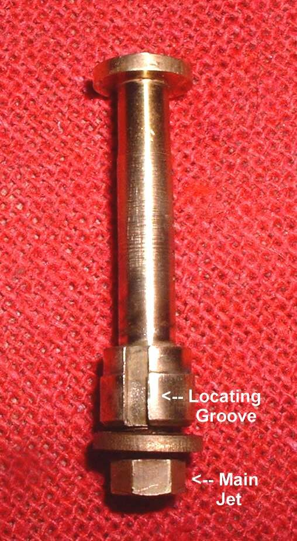
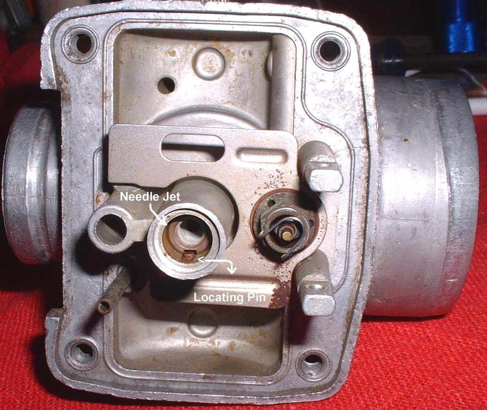
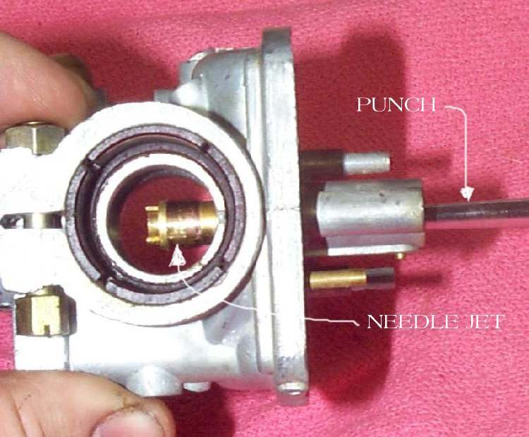
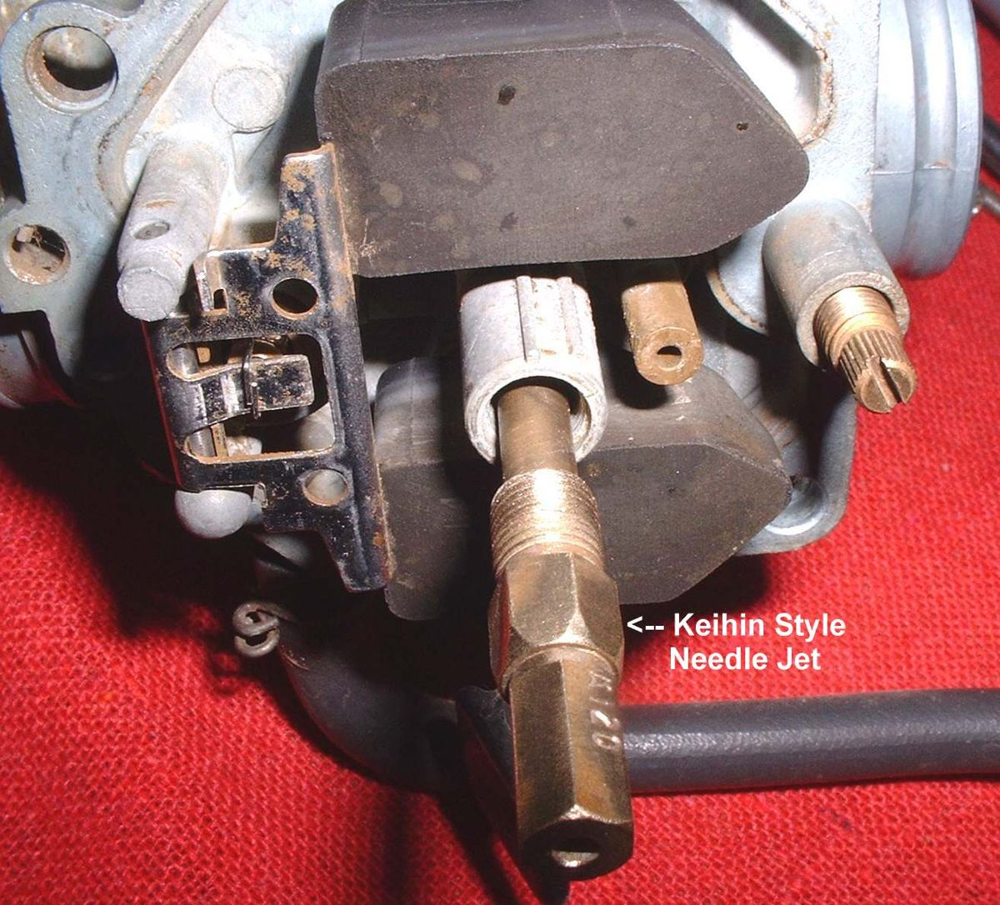
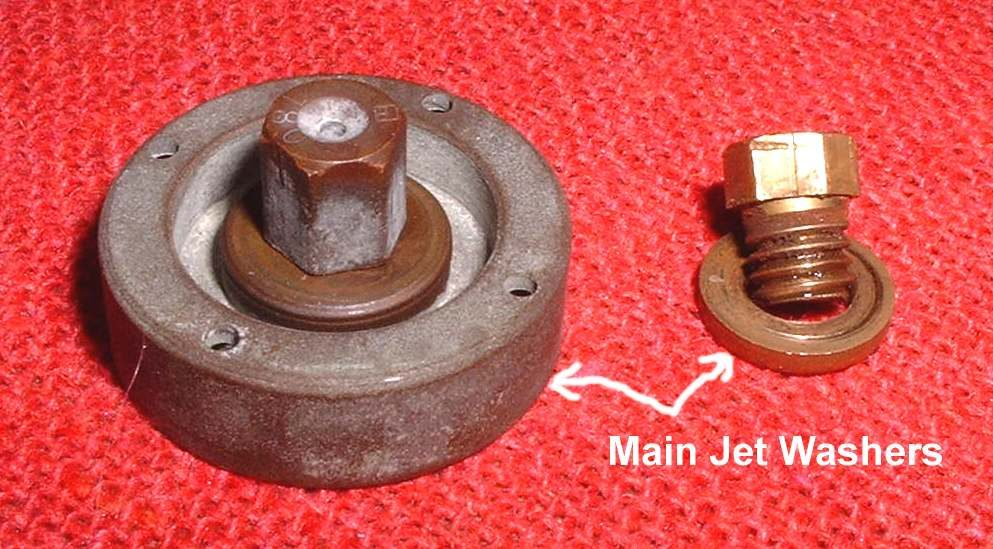

The needle jet sits in the middle of the carburettor. The jet needle enters its top and the main jet screws in at its bottom. It controls the mixture from about 15 to 60 percent throttle. A blocked needle jet gives a flat spot or a lean running engine, and it is a common place for varnish to collect. It breaks easily, so remove it with care and only when cleaning needs it.
Safety
- Fuel is flammable. Turn the tap off, work outdoors or with good airflow, and keep flames away.
- Wear safety glasses when blowing out passages.
You need
- The carburettor off the bike and the float bowl removed. See Remove and refit a carburettor with stiff rubber boots.
- The exploded drawing for your carburettor in the manual. It shows which way the needle jet leaves its bore.
Steps
- Note the style of needle jet. A Mikuni primary or bleed style is put in through the throat and held by a pin, the main jet and a washer. A Keihin style screws into the body, and the main jet screws into its bottom.
- Remove the main jet. It locks the needle jet in place.
- Mikuni styles: tap the needle jet out gently with a soft drift. Keihin style: unscrew it. It breaks easily, so never force it.
- Take off any O-ring and washer. Keep them in order.
- Soak the needle jet and main jet in carburettor cleaner. Look through the bore and check the air bleed hole in the side is open. Check that light passes.
- Refit the needle jet. On a Mikuni style, a pin in the body must fit the groove in the needle jet. Turn it until the groove meets the pin and it drops fully home.
- Refit the washer and the main jet. Tighten the main jet snug, without force.
- Refit the float bowl and the carburettor.
Check your work
- The needle jet sits fully in its bore and does not rock.
- A steady fuel supply and no leak from the bowl with the tap on.
- A smooth pick-up through the mid range on a test ride.
If it did not fix the problem
- Check the needle: Move the jet needle clip to change the mid-range mixture.
- Clear the rest of the passages: Clear carburettor jets and passages.
- Still no better: Flat spot in acceleration.